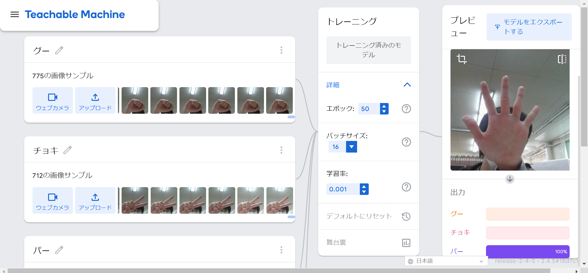
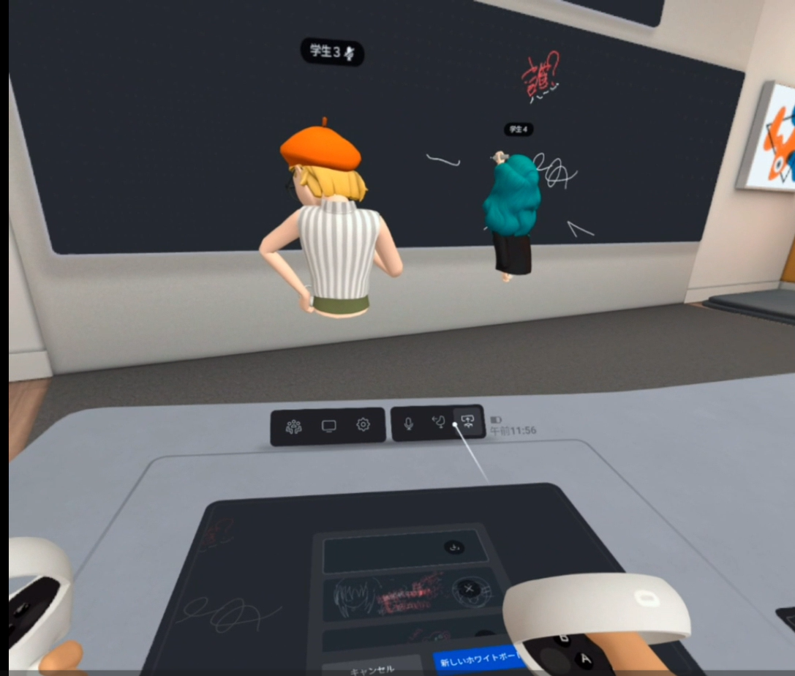

第2週目
2-1 １週目のレポートをHTMLで作る
１週目のレポート
1.内容
一週目のレポートをHTML形式で作成した。とはいっても、大枠が出来上がっていたものに内容と感想を打ち込んだだけなのだが…
2.感想
一週目で学習した内容の中でも、ホームページの作成が特に興味深く、より深く学んでみたいと感じた。
もしかしてこの欄って一週目のレポートを作成した感想？・・・テイク2お願いします！
HTML形式でのレポートの作成は、最初は、見慣れない文字列に囲まれた中で、
実習内容や感想を打つ場所を見失い、難しいと感じていたが、慣れてくるにつれ、
だんだんどこに打てばよい、といったことがわかってきて、
最終的には楽しくレポートを作成することができた。
自分が打った文章がサイトに反映されるのってなんか楽しくない？
2-2 機械学習体験

1.内容
Teachable machinesを活用してグー、チョキ、パーの3つの対象を判別する機械学習モデルを作成した。
2.感想
光の当たり具合によっても判定が変わってしまったので、カメラのピントのボケ具合などでも判定が変わってしまうのではないかと考えた。
これらによる影響を少しでも軽減し、より判定の精度を上げていくためには、より多くのサンプル（できれば自分以外のサンプル）が必要になると考えた。
そして、これは本題とは全く関係のない話だが、試しに自分の顔を判定させたところ、判定はチョキであった。なぜだろうか…
2-3 VR（バーチャルリアリティー：Virtual Reality）会議室の体験

1.内容
meta quest2というVR機器を活用したバーチャルリアリティー会議室の体験を行った。
これは、VRゴーグルと、二つのコントローラーを使い、仮想空間上の会議室にアクセスしするというものである。
2.感想
私にとって、この時がVR初体験であったこともあり、最初は楽しめた。
だが、ある程度時間が経過すると画面酔いのような症状が発現し、少し気持ち悪かった。
おそらく、このバーチャル会議室の需要は、絵を描くなり音声通話なりを使うことで、
遠く離れていてもさも近くにいるように意思の伝達を行う、といったところにあるのではないかと考えた。
ここから、身も蓋もない話になるのだが、この会議室機能、わざわざVRゴーグル等の機材を購入してまで使う人がいるのだろうか…？
会議室として機能させるには人数分のゴーグルが要るわけで…私はこの機能がそれらの出費に見合うものであるとは考えにくいと感じた。